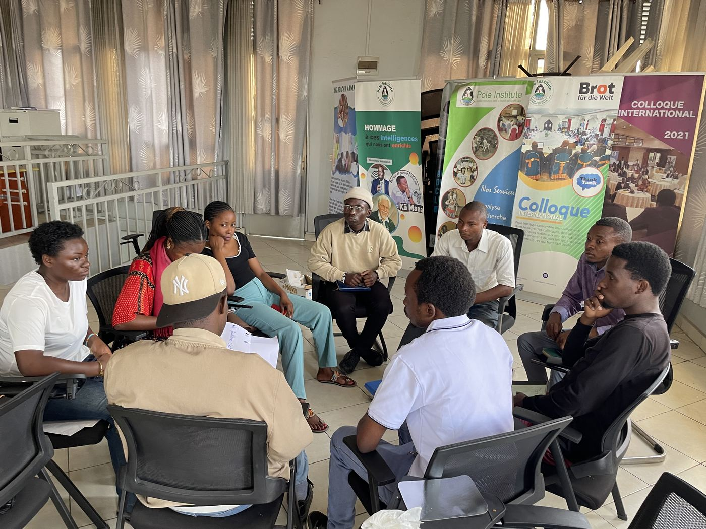
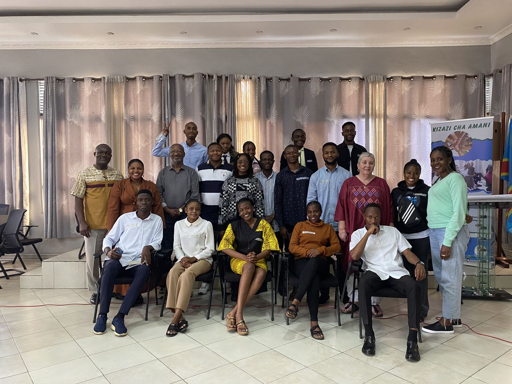
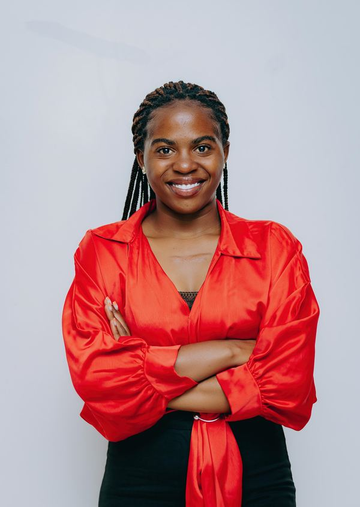
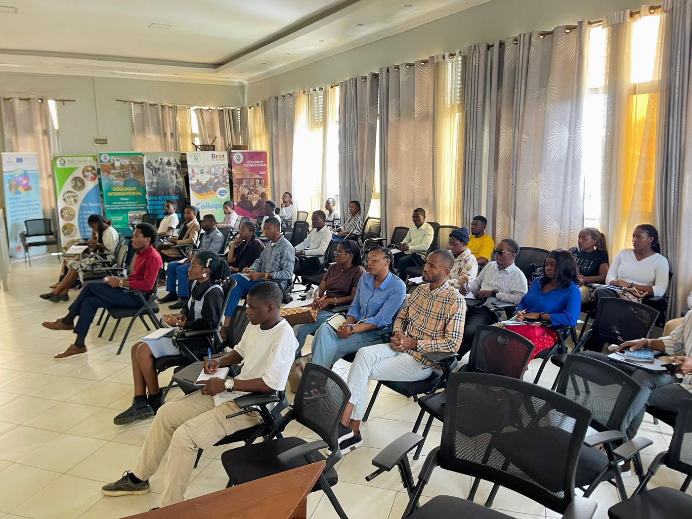

Article titleTitre de l'article
Short summary of a recent workshop, forum or campaign.Court résumé d'un atelier, forum ou campagne récente.

Youth- and women-led · Goma, at the foot of NyiragongoPortée par des jeunes et des femmes · Goma, au pied du Nyiragongo
Goma's young people have lived through war, displacement and the eruptions of Nyiragongo. We believe they are also the ones who will rebuild. GHID gives them the skills, the voice and the opportunities to lead. Les jeunes de Goma ont traversé la guerre, les déplacements et les éruptions du Nyiragongo. Nous croyons que ce sont aussi eux qui reconstruiront. GHID leur donne les compétences, la voix et les opportunités pour diriger le changement.
young people, women & leaders trained or mobilisedjeunes, femmes et leaders formés ou mobilisés
community projects deliveredprojets communautaires réalisés
communities supportedcommunautés accompagnées
trees plantedarbres plantés
Since February 2022 · Illustration: Nyiragongo & Lake KivuDepuis février 2022 · Illustration : Nyiragongo et lac Kivu

Who we areQui nous sommes
Green Hope Initiative for Development is a nonprofit founded on 14 February 2022 by young leaders from North Kivu. Together with women, displaced families and local communities, we work for peace, dignified livelihoods, a healthy environment and better health.Green Hope Initiative for Development est une organisation à but non lucratif fondée le 14 février 2022 par de jeunes leaders du Nord-Kivu. Avec les femmes, les familles déplacées et les communautés locales, nous agissons pour la paix, des moyens de subsistance dignes, un environnement sain et une meilleure santé.
What we doNos domaines d'intervention
Community dialogue, mediation, media literacy and action against hate speech.Dialogue communautaire, médiation, éducation aux médias et lutte contre les discours de haine.
Learn more →En savoir plus →Vocational and entrepreneurship training, mentoring and support for income-generating activities.Formations professionnelles et entrepreneuriales, mentorat et appui aux activités génératrices de revenus.
Learn more →En savoir plus →Tree planting, waste recycling, eco-pavers from plastic and climate education.Reboisement, recyclage des déchets, pavés écologiques en plastique et éducation climatique.
Learn more →En savoir plus →Reliable health information, GBV prevention, sexual and reproductive health, mental well-being.Information sanitaire fiable, prévention des VBG, santé sexuelle et reproductive, bien-être mental.
Learn more →En savoir plus →
Why GHIDPourquoi GHID
Conflict, poverty, climate and health are linked. Our programs are designed to work together.Conflits, pauvreté, climat et santé sont liés. Nos programmes sont conçus pour se renforcer mutuellement.
We design every activity with the people it serves, so they own the results after we leave.Chaque activité est conçue avec les personnes concernées, pour qu'elles s'approprient les résultats dans la durée.
Experience in community projects, strategic communication, advocacy and sustainable development.Expérience en projets communautaires, communication stratégique, plaidoyer et développement durable.
We work with national and international institutions to scale our impact.Nous collaborons avec des institutions nationales et internationales pour amplifier notre impact.
Voices from the communityTémoignages
“Thanks to GHID's training I discovered community leadership. Today I can organise peace initiatives in my neighbourhood.”« Grâce aux formations de GHID, j'ai découvert le leadership communautaire. Aujourd'hui, je peux organiser des initiatives de paix dans mon quartier. »Name, youth leader, NyiragongoNom, jeune leader, Nyiragongo
“GHID's environmental activities taught us that protecting nature means protecting our future. Our community now takes part in reforestation and waste management.”« Les activités environnementales de GHID nous ont appris que protéger la nature, c'est protéger notre avenir. Notre communauté participe aujourd'hui au reboisement et à la gestion des déchets. »Name, environmental program participantNom, participant au programme environnement
Partners & networksPartenaires et réseaux
Every contribution strengthens peace, protects our environment and helps young people and women in eastern DR Congo build the future they want.Chaque contribution renforce la paix, protège notre environnement et aide les jeunes et les femmes de l'Est de la RDC à construire l'avenir qu'ils souhaitent.

About usQui sommes-nous
GHID was founded on 14 February 2022 by young leaders who believe that lasting peace, social justice and inclusive development are the foundations of a better future.GHID a été créée le 14 février 2022 par de jeunes leaders convaincus que la paix durable, la justice sociale et le développement inclusif sont les fondements d'un avenir meilleur.
We work with young people, women, internally displaced people, Indigenous peoples and people living with disabilities to strengthen their resilience to conflict, climate change, health crises and inequality.Nous travaillons avec les jeunes, les femmes, les personnes déplacées internes, les peuples autochtones et les personnes vivant avec un handicap pour renforcer leur résilience face aux conflits, aux changements climatiques, aux crises sanitaires et aux inégalités.
Through participatory methods, community innovation and civic engagement, we turn local challenges into opportunities for sustainable development, for today's generation and the next.Par des approches participatives, l'innovation communautaire et l'engagement citoyen, nous transformons les défis locaux en opportunités de développement durable, pour la génération actuelle et les suivantes.

Our missionNotre mission
To promote peace, empower vulnerable communities, protect the environment and use communication for health, so that societies in eastern DR Congo become inclusive, resilient and sustainable.Promouvoir la paix, autonomiser les communautés vulnérables, protéger l'environnement et mettre la communication au service de la santé, afin que les sociétés de l'Est de la RDC deviennent inclusives, résilientes et durables.
Our visionNotre vision
A peaceful Great Lakes region where young people and women lead their communities toward a green and fair future.Une région des Grands Lacs en paix, où les jeunes et les femmes conduisent leurs communautés vers un avenir vert et juste.
Suggested wording · please confirmFormulation proposée · à confirmerOur valuesNos valeurs
Our teamNotre équipe
Founder & Executive PresidentFondateur et Président exécutif
Expert in environmental communication, education, peace and humanitarian development.Expert en communication environnementale, éducation, paix et développement humanitaire.

Co-founder & Country DirectorCo-fondatrice et Directrice pays
Short bio (2 lines)Courte biographie (2 lignes)
Chief CoordinatorCheffe coordonnatrice
Short bio (2 lines)Courte biographie (2 lignes)
Head of Communication & Public RelationsChef de la communication et des relations publiques
Head of ProgramsChef de programme
Administration & Finance OfficerResponsable de l'administration et des finances
Head of LogisticsChef de la logistique
Our programsNos programmes
Conflict, poverty, climate change, health crises and exclusion are deeply linked, so no single problem can be solved alone. Our four programs put young people, women and vulnerable communities at the centre of change in eastern DR Congo.Conflits, pauvreté, changements climatiques, crises sanitaires et exclusion sont profondément liés : aucun défi ne se règle isolément. Nos quatre programmes placent les jeunes, les femmes et les communautés vulnérables au cœur du changement dans l'Est de la RDC.
Building leaders for lasting peace« Construire des leaders pour bâtir une paix durable »
For decades, eastern DR Congo has lived with armed conflict, community violence and mass displacement. Young people and women are often seen only as victims, yet they are the most dynamic drivers of social change. This program helps them become peacebuilders and responsible leaders who can prevent conflict, lead dialogue and resist manipulation, misinformation and hate speech.Depuis des décennies, l'Est de la RDC vit des conflits armés, des violences communautaires et des déplacements massifs. Les jeunes et les femmes sont souvent perçus comme les seules victimes, alors qu'ils sont les acteurs les plus dynamiques du changement social. Ce programme les aide à devenir des artisans de paix et des leaders responsables, capables de prévenir les conflits, de conduire le dialogue et de résister à la manipulation, à la désinformation et aux discours de haine.
Youth of Nyiragongo, women leaders, students, youth associations, community organisations, internally displaced people and conflict-affected communities.Jeunes de Nyiragongo, femmes leaders, étudiants, associations de jeunes, organisations communautaires, personnes déplacées internes et communautés affectées par les conflits.

Turning young people's potential into lasting opportunity« Transformer le potentiel des jeunes en opportunités durables »
Unemployment and economic insecurity leave young people and women in Nyiragongo vulnerable to exclusion, dependency and, in some cases, recruitment by armed groups. We see them as drivers of the local economy: with skills, resources and opportunities, they become entrepreneurs and job creators.Le chômage et la précarité exposent les jeunes et les femmes de Nyiragongo à l'exclusion, à la dépendance et parfois à l'enrôlement dans des groupes armés. Nous les considérons comme des moteurs de l'économie locale : avec des compétences, des ressources et des opportunités, ils deviennent entrepreneurs et créateurs d'emplois.
Young people, women, internally displaced people, first-time entrepreneurs and community associations.Jeunes, femmes, déplacés internes, entrepreneurs débutants et associations communautaires.
Restore today to protect tomorrow« Restaurer aujourd'hui pour préserver demain »
Conflict, displacement, uncontrolled resource extraction and climate change put heavy pressure on Nyiragongo's ecosystems. Deforestation, soil erosion, poor waste management and biodiversity loss threaten livelihoods. Young people and women, close to local realities, are key actors of the ecological transition.Conflits, déplacements, exploitation incontrôlée des ressources et changement climatique exercent une forte pression sur les écosystèmes de Nyiragongo. Déforestation, érosion, mauvaise gestion des déchets et perte de biodiversité menacent les moyens de subsistance. Proches des réalités locales, les jeunes et les femmes sont des acteurs essentiels de la transition écologique.
Young people, women, schools, community organisations, displaced people and communities of Nyiragongo.Jeunes, femmes, écoles, organisations communautaires, personnes déplacées et communautés de Nyiragongo.
Inform to protect, communicate to save lives« Informer pour protéger, communiquer pour sauver des vies »
Limited access to reliable information, rumours and unequal access to health services help diseases spread and fuel gender-based violence and stigma. Responsible, evidence-based communication changes that. We train young people and women as community relays who share accurate health messages.L'accès limité à une information fiable, les rumeurs et les inégalités d'accès aux soins favorisent la propagation des maladies, les violences basées sur le genre et la stigmatisation. Une communication responsable et fondée sur des données change la donne. Nous formons des jeunes et des femmes comme relais communautaires qui diffusent des messages de santé fiables.
Young people, adolescents, women, community leaders, local organisations and the population of Nyiragongo.Jeunes, adolescents, femmes, leaders communautaires, organisations locales et population de Nyiragongo.

Our integrated approachNotre approche intégrée
Every program relies on citizen participation, inclusive dialogue, local innovation and close work with authorities, civil society and technical and financial partners. By strengthening peace, leadership, livelihoods, the environment and health together, we help communities meet their challenges for the long term.Chaque programme repose sur la participation citoyenne, le dialogue inclusif, l'innovation locale et la collaboration avec les autorités, la société civile et les partenaires techniques et financiers. En renforçant ensemble la paix, le leadership, les moyens de subsistance, l'environnement et la santé, nous aidons les communautés à relever durablement leurs défis.
Portfolio
Each project page shows the context, what we did, the results, the budget and our partners, so donors and communities can see exactly how resources are used.Chaque fiche projet présente le contexte, les activités, les résultats, le budget et les partenaires, pour que bailleurs et communautés voient précisément comment les ressources sont utilisées.

Context: the problem the project responds to, in 2–3 sentences.Contexte : le problème auquel répond le projet, en 2–3 phrases.
Overall goal: the change sought for participants.Objectif général : le changement recherché pour les bénéficiaires.
More projects will be published here. Want to support one? See projects seeking funding.D'autres projets seront publiés ici. Envie d'en soutenir un ? Voir les projets en recherche de financement.
Support usNous soutenir
Your support lets GHID keep working with communities affected by conflict, climate change, inequality and health crises.Votre soutien permet à GHID de poursuivre son action auprès des communautés touchées par les conflits, les changements climatiques, les inégalités et les crises sanitaires.
Every gift goes directly to our community programs.Chaque don finance directement nos programmes communautaires.
We build long-term partnerships with UN agencies, international NGOs, foundations, companies, universities, local governments and public institutions.Nous développons des partenariats durables avec les agences des Nations Unies, ONG internationales, fondations, entreprises, universités, collectivités territoriales et institutions publiques.
Volunteers speed up social change. We welcome help in communication, translation, training, project management, environment, health, fundraising, IT and graphic design.Le bénévolat accélère le changement social. Nous accueillons des compétences en communication, traduction, formation, gestion de projets, environnement, santé, collecte de fonds, informatique et design graphique.

Browse projects currently seeking funding. Each sheet shows the context, objective, budget needed, duration, participants and expected impact.Consultez les projets en recherche de financement. Chaque fiche indique le contexte, l'objectif, le budget recherché, la durée, les bénéficiaires et l'impact attendu.
List 1–3 projects seeking fundingLister 1 à 3 projets à financer
News · Blog · GalleryActualités · Blog · Galerie

Short summary of a recent workshop, forum or campaign.Court résumé d'un atelier, forum ou campagne récente.
Add what GHID did at COP29 and a photo from Baku.Préciser le rôle de GHID à la COP29 et ajouter une photo de Bakou.
Young leaders from Goma create Green Hope Initiative for Development to link peace, the environment and youth leadership.De jeunes leaders de Goma créent Green Hope Initiative for Development pour relier paix, environnement et leadership des jeunes.
GalleryGalerie
Contact usContactez-nous
Want to collaborate, support our work or find an implementing partner in North Kivu? Our team will get back to you.Vous souhaitez collaborer, soutenir nos actions ou trouver un partenaire de mise en œuvre au Nord-Kivu ? Notre équipe vous répondra.
FAQ
Fill in the volunteer form on the Support us page. We'll contact you when a mission matches your skills and availability.Remplissez le formulaire bénévole de la page Nous soutenir. Nous vous contacterons lorsqu'une mission correspond à vos compétences et à votre disponibilité.
You can give by Mobile Money, bank transfer, Visa card or PayPal. Details are on the Support us page.Vous pouvez donner par Mobile Money, virement bancaire, carte Visa ou PayPal. Les détails figurent sur la page Nous soutenir.
Send us a message through the contact form with the subject "Partnership", or call us. We'll arrange a meeting to discuss shared goals.Envoyez-nous un message via le formulaire avec l'objet « Partenariat », ou appelez-nous. Nous organiserons une rencontre pour discuter d'objectifs communs.
We are based in Goma and work mainly in the city of Goma and Nyiragongo territory, North Kivu province.Basée à Goma, GHID intervient principalement dans la ville de Goma et le territoire de Nyiragongo, province du Nord-Kivu.
Calls for applications are posted in News and on our social media. You can also write to us to be told about the next session.Les appels à candidatures sont publiés dans Actualités et sur nos réseaux sociaux. Vous pouvez aussi nous écrire pour être informé de la prochaine session.
Job openings are published in News and on LinkedIn, with instructions for applying.Les offres d'emploi sont publiées dans Actualités et sur LinkedIn, avec les modalités de candidature.
Reports will be available in the Documents section of the Support us page. Until then, contact us and we'll send them.Les rapports seront disponibles dans la section Documents de la page Nous soutenir. D'ici là, contactez-nous et nous vous les enverrons.